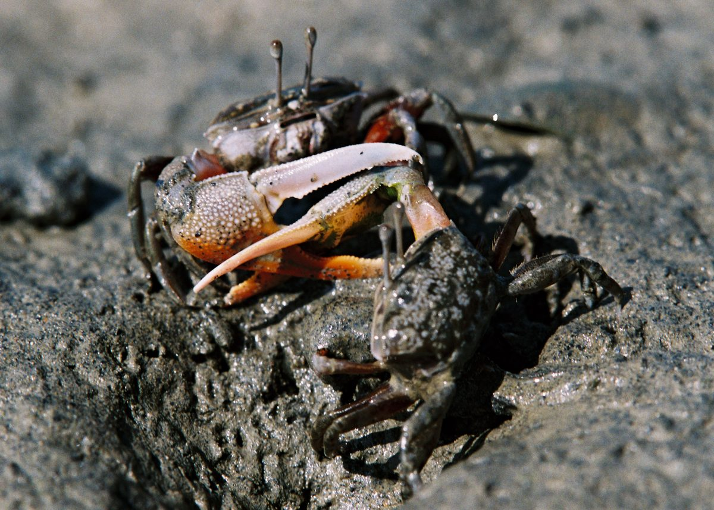
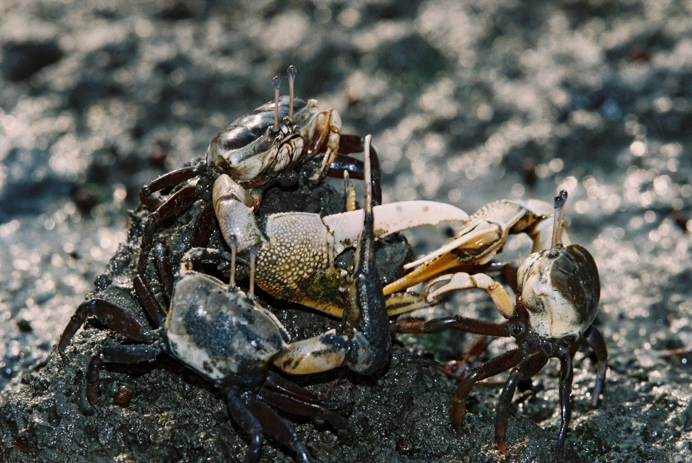
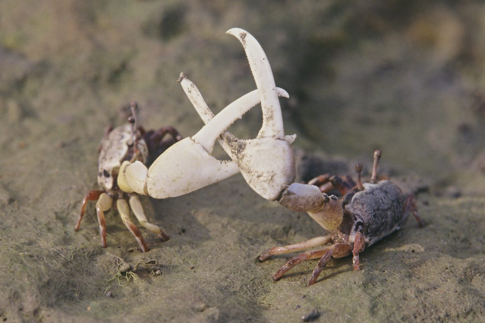
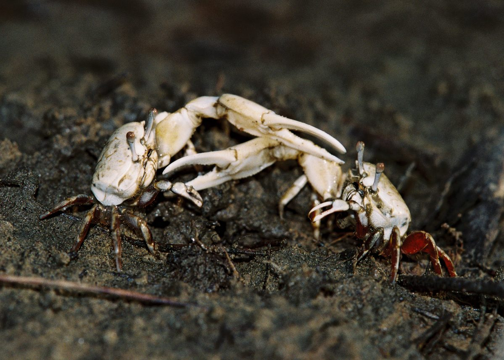
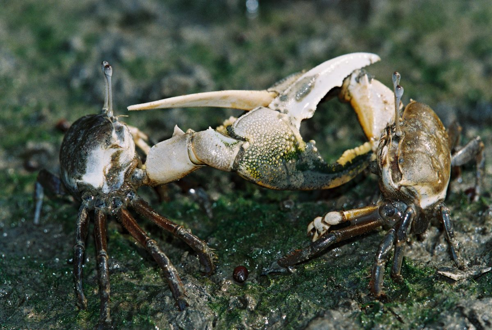

由「温柔」打架談擴充攝影眼界
學習攝影四十年，寫意、寫實探索過，報導、紀實摸索過，風景、人像、花草蟲魚和鳥獸也都經驗過，當走過高山看過大海，驀然回首，猛見溼地招潮蟹的可愛，以為見到新天地，其實，是看到自己的無知。
招潮蟹會走路，會散步，也會打架，甚至勸架。牠們的修養是打架結束，隨即吃飯喝水，不動情緒，表情依舊。我心持續澎湃於打架動作的高潮美，直到看到照片，居然發現激烈情緒的畫面，呈現温柔與平和之感──分不出是打架，還是握手。對此情狀，必須重新學習，正確認知。
參賽者總以為「評審不懂我的心」，良有以也。參賽者找不到「優選」與「入選」作品的攝影藝術層次上的差異之同時，評審是否能夠一貫覺知初選之最佳作品，也是決選的第一名呢？參賽者對攝影的「知覺廣度」是否能和評審對作品的「認知深度」契合呢？是不是每一個人都同樣分不清招潮蟹是打架，還是握手的畫面？當然不是，總有廣度學習，深度認知的人吧！
招潮蟹明明白白地在打架，為何照不出高亢情緒的樣子？參賽者訴說千言萬語在照片上，何以評審不在意？難道只有諂媚迎合評審的傲慢，來交換評審的潛意識自卑嗎？不，參賽者和評審都當自立自強，自我增強、自我肯定與自我實現。
終其一生，似乎看見張三只會寫小說，李四只會發明，王五只會水彩畫，趙六善長舞蹈攝影。奧運會一百公尺冠軍，都無法奪到四百公尺奬牌。「情盡乎辭」的攝影者，找到知己的評審，堪稱三生之幸。當然，善長舞蹈攝影的「博學會士」拒絕擔任「生態攝影」的比賽評審，是令人尊敬的──「月暈現象」（註一）可以是創作者的想像，但不該是評鑑者的自我膨脹的理想藉口。去除知覺錯覺的認知歷程，是「究竟認知」，是開始擴充攝影眼界的正確經驗歷程。
美有自發的，也有襯托出來的，而戲劇高潮，則是培養釀造出來的。拍照和欣賞照片，過程是相反的。創作者和評鑑者是不需相互負責的。欣賞電影的人能到幕後與導演和編劇握手，就是知己。評審照片的人能回溯攝影的創作情緒歷程，就是理直氣壯的評審。二者互補後的契合現象，正是對攝影素材的正確認知之必要──打架就是打架，温柔的打架應該不存在，對畫面的美感知覺，不該與「真」相背，不論作者或評審者都該如此。這是說，招潮蟹的打架，牠們彼此知覺打架行為外，拍者得拍出打架的情緒和動作感（畫面見到打架感的動作表情），閱讀照片和評審照片的人，都得有能力恰當批判「打架的美感」。
野鳥攝影學者陳永褔，曾極力強調野鳥攝影「除了光線，順其自然」。不必，也不可用人的美感觀念去期待野鳥的姿勢和表情，以符合刻板的美覺意識。同種的每隻野鳥都是獨立個體，都有個別差異，攝影者和特定野鳥確立互動價值的深度，便是作品的深度。有同理心的欣賞者，才有資格評鑑和批判照片。攝影者即使孤芳自賞於物（野鳥）我兩忘的密契經驗中，也不會遺憾。──擴大眼界，由自我肯定出發。
仁者樂山，是因為仁者包容山上所有的動物、植物和礦物。攝影的美感情緒，不是特定人士，包括自己在內，「認為是美」就是美。當多種題材的拍攝經驗，在演繹和歸納美感情緒之後，再生的心得，才達到擴充攝影眼界的開始。筆者自以為的招潮蟹打架必然是精彩的，將牠拍下來，堪稱紀錄而已，照片也只是記錄性的媒介物，構圖的美感屬性不一定能作「所當然」式的契合。體會新題材，新鮮且橫生多方趣味，把「新」當「美」來看，待登堂入室，衣帶漸寬的努力，不過爾爾之同時，見山是山已露曙光。創作者和評鑑者的境界層次，是不斷學習，才能成長的。攝影者擴充眼界，才能看見「招潮蟹」，評鑑者能徹底認識「招潮蟹」，才真正理解「招潮蟹」的照片，用攝影藝術的修養對該照片打分數。情緒上的精彩和高潮意識，不能轉化為自己或他人的美感意識，甚或不適合用照片傳達美感經驗時，拍什麼東西都是枉然。簡單說，是題材不討好，深入的說，是吾人美感包容的平等性不足。當所有攝影素材，以任何題材方式表現時，評審都能一視同仁，以仁者自居，有如聖人無常心，以百姓心為心，比賽活動價值自見。
話說回來，各式各樣的畫面，大自寫實與寫意表現，小到不同題材的發揮，批判作品的基準點，其坐標位置為何，誰能肯定？吾人更應虛心學習，擴大眼界。
在「聞道有先後，術業有專攻」的前提下，各人經驗的方向和學習的層次自然有所差異，若能共同尋求多方深度的認知可能性，努力與才華的函數關係，便趨於均衡看待，「天地間任君攝影」、「攝影中自有天地」，至樂無樂，至譽無譽，屬於每位攝影創作者。
努力試著如何將招潮蟹打架鏡頭，與攝影構圖的美感形式，聯結成為自己和讀者共鳴的內容；也試著將其打架招式和人們的美感情緒，合為一氣；以共同理解畫面的訴求，且務求任何不同動物種類，在同一打架的形式強度上，能獲得同樣的評鑑水平，不致於落入「討好」和「不起眼」的陷井中。至少，吾人對招潮蟹打架和跆拳道的爭鬥，在照片上都能分別找到「八十二」分成績的座標位置。
攝影家林太平，是最能啟發人擴充眼界的，二十年來，每年都有一次個展，對他言，攝影像母體，作品以超越自居，攝影且只是媒材，由「拈花惹草」到「府城孔廟」，由「燈繪」到「心繪」，進而看穿「歲月的彩繪」，進入「異象」的「異境」。展向、風格逐年自變，仍不失其一以貫之的攝影藝術人格。近來居然「相紙作畫」，觀念有如超越大腦的思維，將人類不分種族的頭形，寄放在不可思議的「環境」去創作，海濶天空地將美的真誠，貫穿於真誠的美之中。其人放蕩於形骸之外，構圖作脫離造形的經營，照片則傳其神不傳其形，人格與藝術精神充斥在更無真相有真魂的情境。──具象抽象化之後，再融入人格與精神之中。
「若人有眼大如天，還見山高月更濶」，招潮蟹的打架照片或許可以有激烈的温柔感，也可以有温柔的激烈感；當然也可以有高亢情緒的激烈感，若有一天，「打架」成為温柔情懷的懷柔感形式表現，評鑑與創作者都能對畫面的主、客體作同理心互動式觀照，則見以「仁」為美的世界的到來。
照片：

NO.1 牠們在打架，卻像他鄉遇故知，準備握手，誰會懷疑？打架看成握手，誰的錯？

NO.2 三足鼎立，仍難見火藥味。像互道寒暄。錯置美感相位，有待擴充眼界。

NO.3 劍拔弩張，只有虛張聲勢之感──心理距離太遠，像抽象畫，不易理解。

NO.4 眼和腳的危機在即，表現動態模糊的快門，不足以顯示激烈。──動線和認知差異太大，難入精彩大門。

NO.5 大螯動作之前，雙方都用了一段打地基造勢的時間──畫面不容易看見的，及弦外之意部分，正是觀賞者的水準深淺指標。
註一：月暈現象是把月邊的暈光，當作月光看待。是知覺錯覺的一種。例如：功課好的學生，常譽為班長。攝影上，以某專題考取的博學會士，以為可以類化到其他專題領域，成為攝影家。